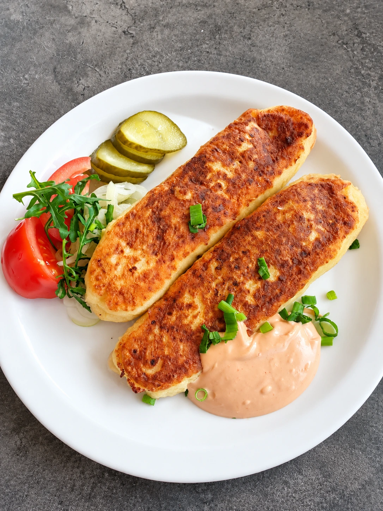

Namų virtuvė ir grilis Kaune
Geras maistas. Geri planai.
Namų virtuvė, grilio skoniai ir vaišės jūsų susibūrimams. Užsukite į Boną Ežero gatvėje.

Bonas · Kaunas
Susitikime prie stalo.
Bone ruošiame namų virtuvės ir grilio patiekalus, banketų vaišes bei maistą išvežimui pagal užsakymą. Dėl artėjančio susibūrimo susisiekite telefonu - aptarsime jums tinkantį pasirinkimą.
Iš mūsų virtuvės